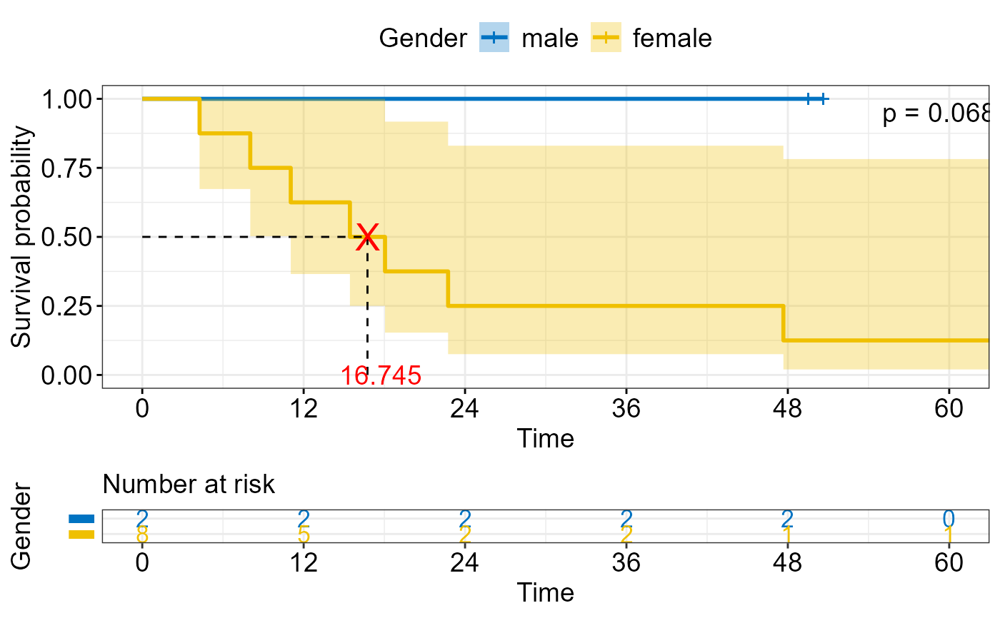

Plot Survival Curves and Save with Median Annotations
Source:R/tar_median_survival.R
tar_median_survival.RdThis function fits a survival model, plots the survival curves, and annotates median survival times. The plot can optionally be saved to file.
Arguments
- df
A data frame containing the survival data.
- var
A variable used for grouping the survival curves.
- time_col
A string specifying the name of the column representing time.
- status_col
A string specifying the name of the column representing status.
- output_file
Optional output path for saving the plot. If `NULL` (default), the function does not write a file.
Examples
# \donttest{
# Example dataset
df_survival <- structure(
list(
status = c(1, 0, 1, 1, 1, 1, 0, 1, 1, 0),
primorgan = structure(
c(1L, 1L, 1L, 2L, 1L, 1L, 1L, 2L, 2L, 2L),
levels = c("Colon", "Rectum"),
class = "factor"
),
sex = structure(
c("male", "female", "male", "male", "male",
"male", "male", "male", "male", "female"),
label = "Gender"
),
time = c(4.26, 49.52, 18.05, 11.04, 47.67, 8.03, 76.2, 15.44, 22.74, 50.64),
subtype = structure(
c(2L, 1L, 2L, 3L, 2L, 3L, 1L, 1L, 1L, 2L),
levels = c("adenocarcinoma", "mucinous", "signet ring cell"),
label = "Histological subtype",
class = "factor"
)
),
row.names = c(NA, -10L),
class = c("tbl_df", "tbl", "data.frame")
)
tar_median_survival(
df = df_survival,
var = sex,
time_col = "time",
status_col = "status",
output_file = file.path(tempdir(), "survival_sex.png")
)
#> Warning: Using `size` aesthetic for lines was deprecated in ggplot2 3.4.0.
#> ℹ Please use `linewidth` instead.
#> ℹ The deprecated feature was likely used in the ggpubr package.
#> Please report the issue at <https://github.com/kassambara/ggpubr/issues>.
#> Scale for x is already present.
#> Adding another scale for x, which will replace the existing scale.
#> Warning: Removed 1 row containing missing values or values outside the scale range
#> (`geom_text()`).
#> Warning: Removed 1 row containing missing values or values outside the scale range
#> (`geom_text()`).
#> Warning: Removed 1 row containing missing values or values outside the scale range
#> (`geom_text()`).
#> Warning: Removed 1 row containing missing values or values outside the scale range
#> (`geom_text()`).
#> Warning: Removed 1 row containing missing values or values outside the scale range
#> (`geom_text()`).
#> Warning: Removed 1 row containing missing values or values outside the scale range
#> (`geom_text()`).

#> Plot saved to: C:\Users\tarka\AppData\Local\Temp\RtmpGo1MpQ/survival_sex.png
# }